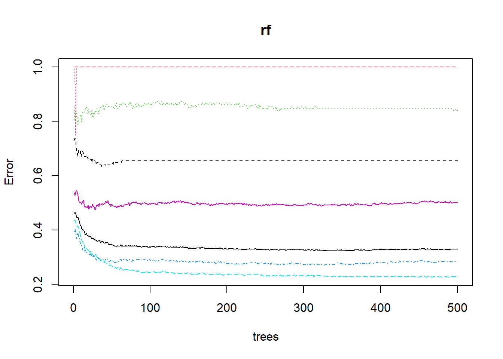
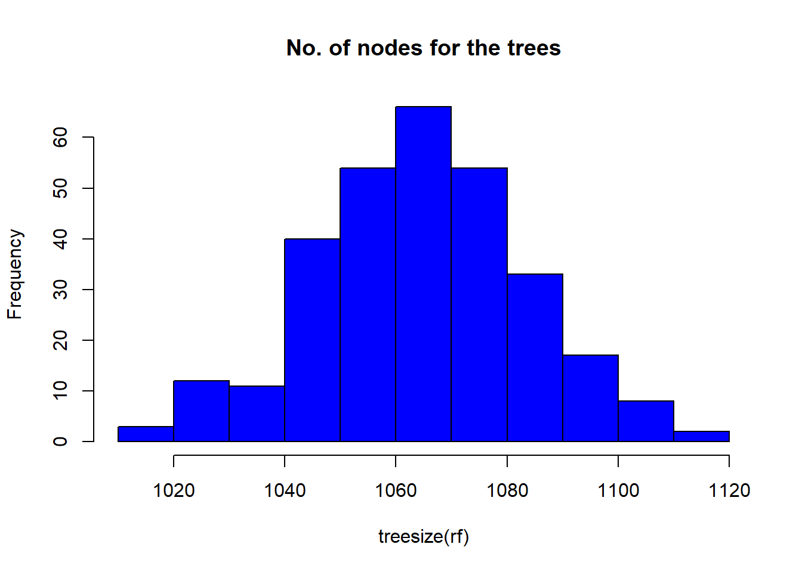
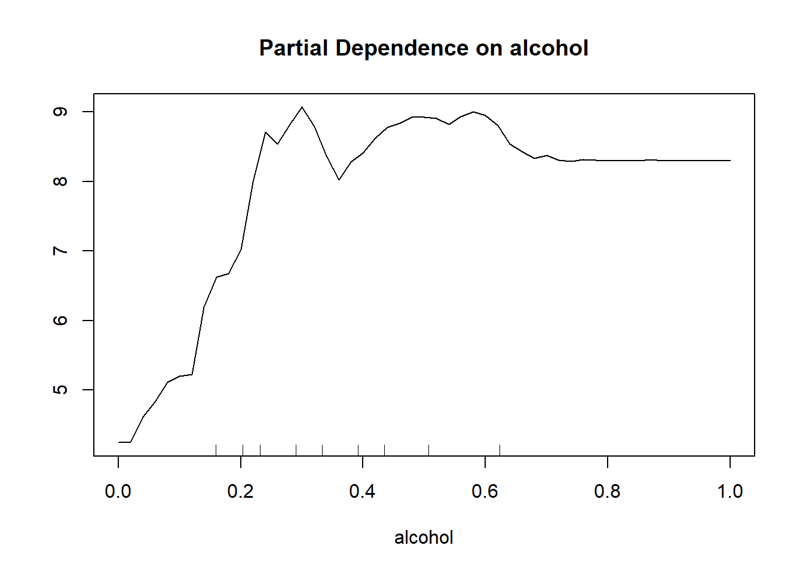

Chapter 4 Random Forest
4.1 Run random forest function
set.seed(444)
train$quality<-as.factor(train$quality)
test$quality<-as.factor(test$quality)
# quality is a function of all other variables
rf <- randomForest(quality~., data=train)
print(rf)##
## Call:
## randomForest(formula = quality ~ ., data = train)
## Type of random forest: classification
## Number of trees: 500
## No. of variables tried at each split: 3
##
## OOB estimate of error rate: 32.91%
## Confusion matrix:
## 3 4 5 6 7 8 9 class.error
## 3 0 0 11 8 0 0 0 1.0000000
## 4 0 24 82 43 2 0 0 0.8410596
## 5 0 4 1086 421 7 0 0 0.2845850
## 6 0 1 335 1526 112 1 0 0.2273418
## 7 0 0 21 354 379 6 0 0.5013158
## 8 0 0 3 52 34 47 0 0.6544118
## 9 0 0 0 1 4 0 0 1.0000000The reults show that the out of bag error rate is 33.27%. The model was most inaccurate when predicting wines with a quality values of 3, 4, and 8 with a 100% error rate. It was most accurate when predicting wines with a quality of 5, 19% error rate.
4.2 Predicition and COnfusion matrix - train data
p1 <- predict(rf, train)
p1<- droplevels(p1) #drop any unused levels
head(p1) # predicted values## 1 3 6 7 9 10
## 5 5 5 5 7 5
## Levels: 3 4 5 6 7 8 9head(train$quality) # actual values## [1] 5 5 5 5 7 5
## Levels: 3 4 5 6 7 8 9Coincidentally, all of the first 6 predictions were 100% accurate.
#install.packages('caret', dependencies = TRUE)
confusionMatrix(p1, train$quality )## Confusion Matrix and Statistics
##
## Reference
## Prediction 3 4 5 6 7 8 9
## 3 19 0 0 0 0 0 0
## 4 0 151 0 0 0 0 0
## 5 0 0 1518 0 0 0 0
## 6 0 0 0 1975 0 0 0
## 7 0 0 0 0 760 0 0
## 8 0 0 0 0 0 136 0
## 9 0 0 0 0 0 0 5
##
## Overall Statistics
##
## Accuracy : 1
## 95% CI : (0.9992, 1)
## No Information Rate : 0.4327
## P-Value [Acc > NIR] : < 2.2e-16
##
## Kappa : 1
##
## Mcnemar's Test P-Value : NA
##
## Statistics by Class:
##
## Class: 3 Class: 4 Class: 5 Class: 6 Class: 7 Class: 8 Class: 9
## Sensitivity 1.000000 1.00000 1.0000 1.0000 1.0000 1.0000 1.000000
## Specificity 1.000000 1.00000 1.0000 1.0000 1.0000 1.0000 1.000000
## Pos Pred Value 1.000000 1.00000 1.0000 1.0000 1.0000 1.0000 1.000000
## Neg Pred Value 1.000000 1.00000 1.0000 1.0000 1.0000 1.0000 1.000000
## Prevalence 0.004163 0.03309 0.3326 0.4327 0.1665 0.0298 0.001096
## Detection Rate 0.004163 0.03309 0.3326 0.4327 0.1665 0.0298 0.001096
## Detection Prevalence 0.004163 0.03309 0.3326 0.4327 0.1665 0.0298 0.001096
## Balanced Accuracy 1.000000 1.00000 1.0000 1.0000 1.0000 1.0000 1.000000There were no misclassifications of our training data, our model was 100% accurate. THe reason for the large discrepancy between accuracy markers for the OOB and the confusion matrix is that the confusion matrix for p1 is base on the training data random forest model…so it has already “seen” the training data data points.
4.3 Predicition and COnfusion matrix - test data
p2 <- predict(rf, test)
p2<-droplevels(p2) # drop unused levels
head(p2) # predicted values## 2 4 5 8 11 16
## 5 5 5 5 5 5
## Levels: 3 4 5 6 7 8head(test$quality) # actual values## [1] 5 6 5 7 5 5
## Levels: 3 4 5 6 7 8This model was able to predict 4 out of 6 of the first values accurately.
confusionMatrix(p2, test$quality )## Confusion Matrix and Statistics
##
## Reference
## Prediction 3 4 5 6 7 8
## 3 0 1 0 0 0 0
## 4 0 8 1 1 0 0
## 5 3 31 448 136 9 0
## 6 7 24 169 680 128 24
## 7 1 1 2 44 178 15
## 8 0 0 0 0 4 18
##
## Overall Statistics
##
## Accuracy : 0.6891
## 95% CI : (0.6679, 0.7097)
## No Information Rate : 0.4454
## P-Value [Acc > NIR] : < 2.2e-16
##
## Kappa : 0.512
##
## Mcnemar's Test P-Value : NA
##
## Statistics by Class:
##
## Class: 3 Class: 4 Class: 5 Class: 6 Class: 7 Class: 8
## Sensitivity 0.0000000 0.123077 0.7226 0.7898 0.55799 0.315789
## Specificity 0.9994797 0.998929 0.8637 0.6716 0.96097 0.997868
## Pos Pred Value 0.0000000 0.800000 0.7145 0.6589 0.73859 0.818182
## Neg Pred Value 0.9943064 0.970359 0.8683 0.7991 0.91667 0.979592
## Prevalence 0.0056906 0.033626 0.3207 0.4454 0.16503 0.029488
## Detection Rate 0.0000000 0.004139 0.2318 0.3518 0.09208 0.009312
## Detection Prevalence 0.0005173 0.005173 0.3244 0.5339 0.12468 0.011381
## Balanced Accuracy 0.4997399 0.561003 0.7931 0.7307 0.75948 0.6568294.4 Error Rate in Random Forest Model
plot(rf) THe model has a drop off after about 300 trees and then is more or less constant, therefore, we can adjust tune our model.
THe model has a drop off after about 300 trees and then is more or less constant, therefore, we can adjust tune our model.
4.5 Tune mtry
set.seed(2222)
t <- tuneRF(train[,-12], train[,12],
stepFactor = 0.5,
plot=TRUE,
ntreeTry = 100,
trace=TRUE,
improve=0.05)## mtry = 3 OOB error = 33.26%
## Searching left ...
## mtry = 6 OOB error = 34.36%
## -0.03293808 0.05
## Searching right ...
## mtry = 1 OOB error = 33.46%
## -0.005928854 0.05 So this means that the model hits its lowest error rate when mtry=3, so we can then go back and adjust our model to reflect this new mtry value.
4.6 Random Forest
Rerun random forest with new tuning factors
set.seed(444)
# quality is a function of all other variables
rf <- randomForest(quality~., data=train,
ntree=300,
mTry=3,
importance=TRUE,
proximity=TRUE)
print(rf)##
## Call:
## randomForest(formula = quality ~ ., data = train, ntree = 300, mTry = 3, importance = TRUE, proximity = TRUE)
## Type of random forest: classification
## Number of trees: 300
## No. of variables tried at each split: 3
##
## OOB estimate of error rate: 32.23%
## Confusion matrix:
## 3 4 5 6 7 8 9 class.error
## 3 0 1 10 8 0 0 0 1.0000000
## 4 0 21 85 45 0 0 0 0.8609272
## 5 0 5 1100 407 6 0 0 0.2753623
## 6 0 1 321 1537 115 1 0 0.2217722
## 7 0 0 22 343 388 7 0 0.4894737
## 8 0 0 4 55 30 47 0 0.6544118
## 9 0 0 0 1 4 0 0 1.0000000Our original OOB estimate of error rate was 33.27% and now it is 32.65%, so it was improved by about 0.5%.
4.7 Rerun Predicition and Confusion matrix - train data
p1 <- predict(rf, train)
p1<- droplevels(p1) # drop any unused levels
head(p1) # predicted values## 1 3 6 7 9 10
## 5 5 5 5 7 5
## Levels: 3 4 5 6 7 8 9head(train$quality) # actual values## [1] 5 5 5 5 7 5
## Levels: 3 4 5 6 7 8 9Coincidentally, all of the first 6 predictions were 100% accurate.
confusionMatrix(p1, train$quality )## Confusion Matrix and Statistics
##
## Reference
## Prediction 3 4 5 6 7 8 9
## 3 19 0 0 0 0 0 0
## 4 0 151 0 0 0 0 0
## 5 0 0 1518 0 0 0 0
## 6 0 0 0 1975 0 0 0
## 7 0 0 0 0 760 0 0
## 8 0 0 0 0 0 136 0
## 9 0 0 0 0 0 0 5
##
## Overall Statistics
##
## Accuracy : 1
## 95% CI : (0.9992, 1)
## No Information Rate : 0.4327
## P-Value [Acc > NIR] : < 2.2e-16
##
## Kappa : 1
##
## Mcnemar's Test P-Value : NA
##
## Statistics by Class:
##
## Class: 3 Class: 4 Class: 5 Class: 6 Class: 7 Class: 8 Class: 9
## Sensitivity 1.000000 1.00000 1.0000 1.0000 1.0000 1.0000 1.000000
## Specificity 1.000000 1.00000 1.0000 1.0000 1.0000 1.0000 1.000000
## Pos Pred Value 1.000000 1.00000 1.0000 1.0000 1.0000 1.0000 1.000000
## Neg Pred Value 1.000000 1.00000 1.0000 1.0000 1.0000 1.0000 1.000000
## Prevalence 0.004163 0.03309 0.3326 0.4327 0.1665 0.0298 0.001096
## Detection Rate 0.004163 0.03309 0.3326 0.4327 0.1665 0.0298 0.001096
## Detection Prevalence 0.004163 0.03309 0.3326 0.4327 0.1665 0.0298 0.001096
## Balanced Accuracy 1.000000 1.00000 1.0000 1.0000 1.0000 1.0000 1.000000Again the accuracy is 100% but this is due to the training data already being seen by the model.
4.8 Rerun Predicition and COnfusion matrix - test data
p2 <- predict(rf, test)
p2 <- droplevels(p2) # drop any unuused levels
head(p2) # predicted values## 2 4 5 8 11 16
## 5 5 5 5 5 5
## Levels: 3 4 5 6 7 8head(test$quality) # actual values## [1] 5 6 5 7 5 5
## Levels: 3 4 5 6 7 8This model was able to predict 4 out of 6 of the first values accurately.
confusionMatrix(p2, test$quality )## Confusion Matrix and Statistics
##
## Reference
## Prediction 3 4 5 6 7 8
## 3 0 1 0 0 0 0
## 4 0 8 1 2 0 0
## 5 3 32 447 139 10 0
## 6 7 23 170 675 130 25
## 7 1 1 2 45 175 14
## 8 0 0 0 0 4 18
##
## Overall Statistics
##
## Accuracy : 0.6844
## 95% CI : (0.6632, 0.7051)
## No Information Rate : 0.4454
## P-Value [Acc > NIR] : < 2.2e-16
##
## Kappa : 0.5047
##
## Mcnemar's Test P-Value : NA
##
## Statistics by Class:
##
## Class: 3 Class: 4 Class: 5 Class: 6 Class: 7 Class: 8
## Sensitivity 0.0000000 0.123077 0.7210 0.7840 0.54859 0.315789
## Specificity 0.9994797 0.998394 0.8599 0.6688 0.96097 0.997868
## Pos Pred Value 0.0000000 0.727273 0.7084 0.6553 0.73529 0.818182
## Neg Pred Value 0.9943064 0.970343 0.8671 0.7940 0.91504 0.979592
## Prevalence 0.0056906 0.033626 0.3207 0.4454 0.16503 0.029488
## Detection Rate 0.0000000 0.004139 0.2312 0.3492 0.09053 0.009312
## Detection Prevalence 0.0005173 0.005691 0.3264 0.5329 0.12312 0.011381
## Balanced Accuracy 0.4997399 0.560735 0.7904 0.7264 0.75478 0.656829Overall, there was only a 0.5% increase in accuracy for the test data. However, there were improvements in sensitify for Class 5 and Class 7.
4.9 Number of Nodes on the trees
hist(treesize(rf),
main = "No. of nodes for the trees",
col="blue") ## Variable Importance
varImpPlot(rf,
main="Variable Importance") This tells us that alcohol has the greatest importance in our model. Removing this variable would result in a 30% mean decrease in accuracy. On the opposite end of the spectrum the pH has almost no affect in the model’s accuracy.
This tells us that alcohol has the greatest importance in our model. Removing this variable would result in a 30% mean decrease in accuracy. On the opposite end of the spectrum the pH has almost no affect in the model’s accuracy.
4.10 Partial Dependence Plots
Produces partial plot for alcohol in training set data/rf model for classication 5 aka quality =5.
partialPlot(rf, train, alcohol, 5)This plot tells u that when alcohol is less than 11% it predicts classification 5 more strongly than when it is greater than 11%.
partialPlot(rf, train, alcohol, 7)
This plot tells us that when alcohol is greater than 10% it predicts classification 7 more strongly than when it is less than 10%.